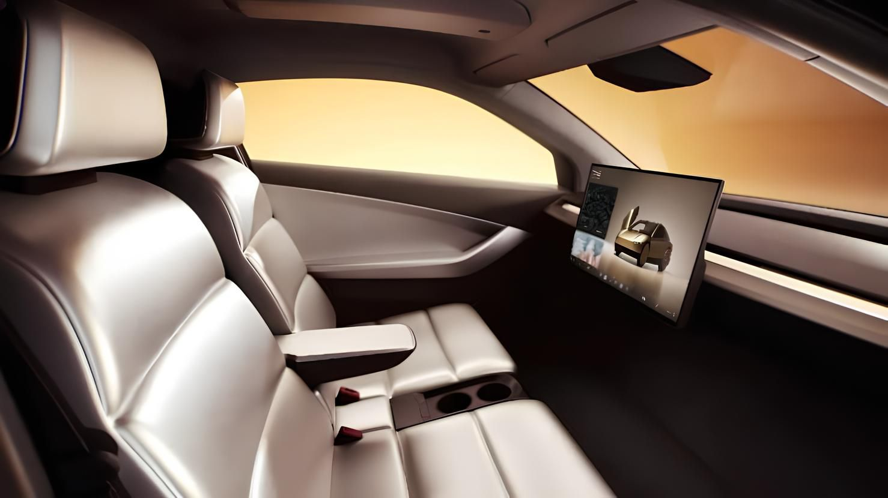

A Tesla sempre tá na frente quando o assunto é carro elétrico e tecnologia de direção autônoma. E agora, eles estão prestes a lançar o Cyber Táxi, que promete mudar totalmente a nossa maneira de se locomover! Com um design que divide opiniões e funcionalidades que impressionam, esse carro é realmente uma novidade.

Uma inovação que promete revolucionar o transporte urbano! Com seu design futurista, que inclui rodas fechadas, portas que se abrem para cima e uma impressionante barra de luz LED na traseira, esse veículo certamente não passa despercebido. Ao entrar, você se depara com um interior minimalista, equipado com apenas duas poltronas e uma tela de infoentretenimento, tudo pensado para proporcionar uma experiência moderna e confortável. O mais impressionante? O Cyber Táxi é totalmente autônomo, dispensando volante, pedais e retrovisores, utilizando inteligência artificial e câmeras para navegar pelas ruas, como se você tivesse um motorista incansável. Com uma autonomia digna de nota 1000, a Tesla promete que o Cyber Táxi pode rodar o dia inteiro sem precisar de recarga, permitindo que você explore a cidade sem preocupações. A produção está prevista para começar em 2026, com um preço acessível de até US$ 30 mil, tornando essa inovação ainda mais atraente. No entanto, a expectativa está no ar, já que o veículo ainda aguarda a aprovação final das autoridades de trânsito nos EUA.